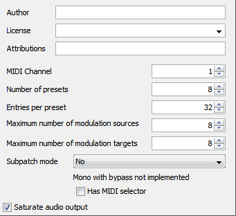
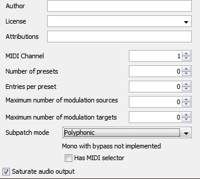

If you put objects in subpatch edit the settings of the subpatch to suppress unwanted features (presets, modulations...) (in the patcher edit window -> View -> Settings)
 
Try to place the audio rate objects as they are used in your processing chain (left to right, top to bottom), it avoids the axoloti to add unnecessary buffers.
was wondering, since you are doing some testing, I am having a patch that is overloading and I think one object is using a lot of SRAM, but I dont know how to test it.
Would you be so kind and check the community module called TSG/dist/diodeSat?
It uses a lookup table which I think it stored in the SRAM and uses a lot of it. Anyway, I just want to have my thoughts confirmed, that this one os hungry on SRAM
well apparently my method of testing isn't really useful. As Smashedtransistors pointed out even the place where you put an object has an effect on the sram usage. I tested that out and noticed the difference. The settings of the patch change the usage too. Too mutch variable's apparently for my method to work. Pitty.
I just made a patch that overflowed by 68 bytes and then added the object to see how many bytes where added. Seems like the only help this method would be now is to have a rough estimate as to how hungry an object is on sram compared to other objects.
Execution order is realy important when you want to be savy. Especially red lines that are out of execution order can be very expensive.
All sort of UI elements, like dials, toggles etc use up sram, so I tend to edit the objects and get rid of them. Even when an object is in a subpatch the UI part will eat sram, so delete everything that's not needed.
shortening the names saves sram too? can't be that mutch now can it? But sram is very limited so every byte counts
I'll keep an eye on execution order from now on. Editing objects to get rid of dials is something i'll be trying from now on too but my coding knowledge is really basic.
i edited the mix object to just go : outlet_out= _SSAT(inletin1 + inlet_in2 + inlet_in3 ,28);
just adding up all the inlets , can't get any more basic than this right i don't know what the 28 does but i left it in to be sure.
400 bytes less by just moving some objects down I can add reverb now
19 sample players , of witch 14 are stereo , with seperate lp filter for drums and synths a metronome and a reverb all crammed into one axoloti Lets see what else i can squeeze out of it
That one is fairly simple. Just embed the object, click edit, delete the parameters in the "parameters" section and that delete parameter in the code. very often there will be: inletx+paramx so you delete the +paramx part.
That is indeed a good Idea but can make the whole setup more complex as well
3 axos here, 2 half broken and 1 completely fucked...damn
@jaffasplaffa@Blindsmyth I was wondering how you managed to fry your axo's. I've had a dozen up to now (in all kind of shapes and situations), and only fried part of one of them, and managed to mend it with little hassle. Have you been feeding in strange voltages, or deepsee diving with them ?
Otherwise, nice thread, I've never really found myself wanting more SRAM until having OLED screens and rotary encoders (so building big menu systems in each patch). So these tips are always very welcome.
6 axoloties here, all are operational. I think interfacing it with 5v devices (arduino) can be delicate (use logic level adapters). I interface it with a 3v3 arduino due to avoid this kind of trouble
The 2 of them to be honest I am not 100% sure what happened to them. I connected them via usb to computer and then it wouldnt turn on anymore. This happened to TWO boards in the same day, with 1 minute...... I was devastated and could not determine the cause, neither could Johannes. These 2 were replaced by Johannes.
The last one I don't remember.
So no deepsea diving, hehe
Yeah I think it depends on how you use it. My main goal have been to make music with only a single Axoloti. you know, have everything playing form one Axo, like kick/bass/hh/drums/pads/Etc. all from same Axoloti. And on top of that some effects., etc....., . And if you also want to use quality modules, this becomes a bit heavy for single Axoloti.
But using it as a single instrument, yeah I think SRAM is not an issue.
After having a few six month break from Axoloti I have been diving into it again and I have given up on using one single Axoloti for everything and gotten myself a display adapter so I can have have an extra display for my Macbook. That display does making working with several Axolotis a lot easier. And 2 seems to do it pretty well, all though I think I am going to get a third soon :=)
I fried one board propably with touching a gpio with a 12V power supply cable by accident.
2 other boards are semi fried, line output driver propably broke. That was also power related stuff. I remember having a daisy chain of several devices connectet to a battery with some of them center positive some center negative. I made a mistake with one device, so + - wrong and boom, diode protection fried and axoloti only having blinking red light.
For me Sram is really an issue, much more than cpu. I have a 3 track looper, delay, reverb, filters, step sequencer compressor, ducking effect, all on one board wich is nice but I'm completely at the limit. Always when I want to add something new I need to find more ways of saving sram. Wich is not too bad actually, since I learn a lot
One thing that can save you sram too is replacing subpatches or complex combinations of objects that do a specific task by a dedicated object. Unfortunately I'm not a coder, so I always have to beg my programmer friends to do so for me
Yeah it is somethign I have been struggling with too. Seems like its a common one for everyone. More boards helps a bit
Yeah I really dont use subpatches that much either, I prefer to do it in code too. Cant do everything but getting better at it and yeah that really helps get a lot more out of Axoloti.
All though I still need a third one I think ..... : = )
I ran into the sram problem recently and made some observations (maybe they are obvious) It seems to fail when the executable in the build-directory gets slighly larger than 40kb. "Compound" objects use way more sram than coded ones, so I avoid these. I got the hang of understanding and editing the code in axo-objects and thus started integrating/merging bits from other objects into new ones, resulting in a smaller executable. Also, AFAIK C++ functions and classes are the only way to have code actually be re-used, so that can help too. I hope my statements are correct, this is just what I believe to be true and it helped me.


 Argh.....
Argh.....